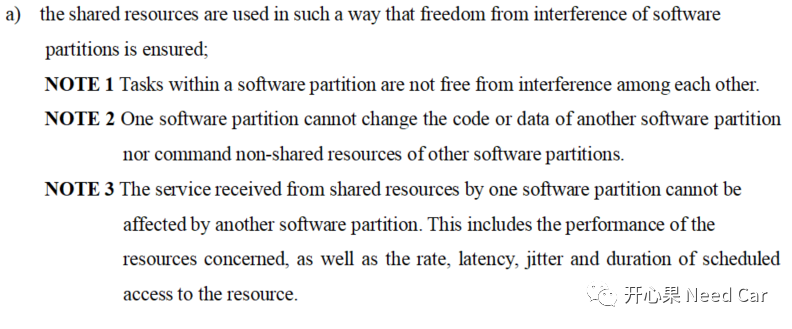
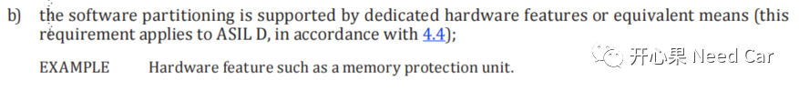
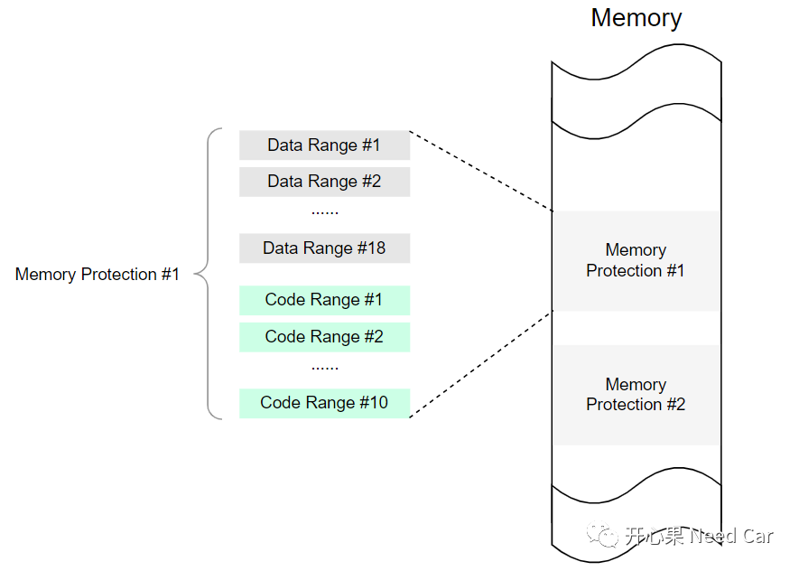
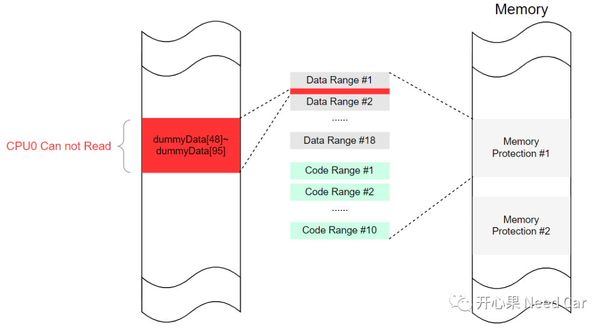
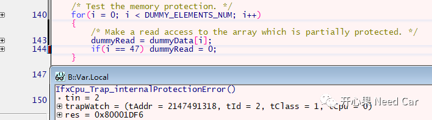

开心果 Need Car · 2023-10-07T09:19:00+08:00 · 微信原文
搞技术，来不得花哨。只有知识纵深足够，你才有勇气扛着“炸药包”去撕开一道防线，干掉工程顽疾bug。知识纵深的打造，需要一个一个细节的积累，填平一个一个bug，没有捷径，不然，只能围着“敌人”外围防线转悠，"觉知此事要躬行"。——开心果 Need Car
作为一个软件开发人员，我们对内存并不陌生。不管是数据还是代码均需要分配内存。随着软件复杂度的提升，汽车人也越来越多地关注软件运行的安全性。而内存作为数据和代码"存活的土壤"，也是工程问题常见的重灾区。所以，管理好内存、用好内存是开发人员必须正视的一个问题。
1、ISO26262对于内存保护的约束
在ISO 26262(国际功能安全标准) Part6部分提出了软件分区（software partitions）机制，具体规范要求如下：

ISO 26262的规范中，也明确指出：内存保护功能的实现依赖于硬件，如果芯片本身不支持内存的分区保护，软件的分区保护也就无从谈起。如果硬件支持内存分区，也就意味着芯片硬件的内存分区机制需要通过ISO26262的功能安全认证。eg：英飞凌的Aurix单片机，每个CPU均可通过MPU（Memory Protection Unit）设置内存分区保护。ISO26262对该需求的约束如下所示：

如果了解了ISO26262中的软件分区（software partitions），是否就能稍稍理解Autosar中的OS-Application了呢？OS-Application是一系列操作系统对象（Objects）的集合，操作系统对象包括：Tasks、ISRs、Alarms、 Schedule tables、Counters。
在Autosar中，每个Core至少分配一个OS-Application，OS-Application又分为Trusted和Non-Trusted。
Trusted OS-Application拥有更高的访问权限，它可以访问大部分资源。在运行时，可以不受监控或者保护特性的限制，可以运行在特权模式，而且对内存访问不受限制。
Non-Trusted OS-Application的访问权限相对较少，它访问内存受限。在运行时，需要使能监控和保护机制，不允许运行在特权模式。
2、基于Aurix的内存保护实现
MPU属于芯片内部硬件单元，用于设置内存保护分区。通过MPU，将内存区（Memory）划分为若干各保护范围，根据区域类型，可以设置数据（Data）读/写权限，以及代码（Code）执行权限。在TC1.6.2P的芯片架构中，每个Core有6个内存保护寄存器集。每个Core又可以设置18个数据保护范围，10个代码保护范围。当内存保护使能以后，如果代码执行到非法区域或者数据读/写非法区域，将触发Trap。
每个Core的内存保护区与保护范围，示意如下：

对于Data保护范围，最小颗粒度（granularity）为8 bytes，也就是说，数据保护范围需要是8 bytes的正整数倍。对于Code保护范围，最小粒度为32 bytes。每个内存保护区内的保护范围子集均可以独立设置数据的读/写权限或者代码执行权限。
注意：在内存保护区内设置多个保护范围子集时，子集之间需要预留一些缓冲区（Buffer）。
2、设置代码（Code）保护范围（Range），需要设置CPRy_L (y=0-9)和CPRy_U (y=0-9)寄存器，数据保护范围最小粒度是32 bytes，因此，低5 bit保留。CPRy_L (y=0-9)设置保护内存的下边界，CPRy_U (y=0-9)设置保护内存的上边界。设置内存保护区的代码执行范围使能，在CPXE_y (y=0-5)寄存器设置代码的可执行权限（1表示对应范围可以执行，0表示对应范围不能执行）
3、设置状态字寄存器（PSW，Program Status Word）的PRS（Protection Register Set）位域，激活内存保护设置。
4、使能内存保护，设置系统配置寄存器（SYSCON，System Configuration Register），配置SYSCON.PROTEN == 1，使能内存保护。
（三）代码示例
参考官方示例，设置CPU0的数据dummyData[48]~dummyData[95]为不可访问空间，当程序访问dummyData[48]内存空间时，程序进入Trap，示意如下：

程序进入异常（Trap），如下所示：

https://github.com/Kaixinguo2021/Tasking_TC397_MPU.git
3、内存保护弊端
虽然使用内存保护可以有效的发现内存非法操作行为，但是，这并不意味着内存保护设置的越多越好。在程序运行时，操作系统需要根据MPU的配置，检查内存访问的合法性，如此，将牺牲部分CPU性能。因此，内存保护设置多少，需要结合项目实际情况设置。
往期精彩回顾